Auto-Sort the Plastic, Auto-Save the Planet.
BottleSort is an intelligent, automated system that uses sensors and AI to identify and sort plastic bottles by material type — including PET, HDPE, LDPE, and PP. By streamlining the segregation process at the source, BottleSort reduces human effort, increases recycling efficiency, and helps build a cleaner, greener future — one bottle at a time.
Learn More